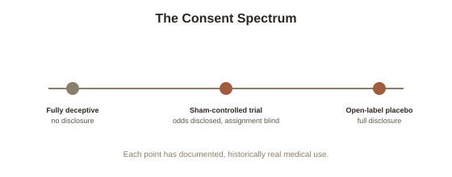

Chapter 5: The Ethics of Deception in Medicine
Chapter 4 ended with sham surgery raising the sharpest version of a question that has run underneath this entire topic: what exactly do patients need to be told before consenting to a treatment or a trial, when the treatment's benefit may depend partly on their not knowing everything? This closing chapter takes that question on directly, because it is a real, unresolved tension in medical ethics, not a settled matter with an obvious answer.
The core tension, stated plainly
Informed consent (the ethical and legal requirement that a patient understand and voluntarily agree to a medical procedure or trial before it happens, including its risks, benefits, and alternatives) is a foundational principle of modern medical ethics, and for good reason — it exists specifically to prevent the kind of deception and coercion documented in genuinely dark chapters of medical history. But Chapter 1's expectation pathway, and even more starkly Chapter 4's sham surgery findings, show that fully disclosing everything about a treatment (including, in a sham trial, the real possibility that a patient may receive no active intervention at all) can itself measurably change the outcome being studied or delivered. This isn't a hypothetical tension — it's been measured directly in nocebo research, discussed in Chapter 1, where warning patients about a specific side effect measurably increases how often that side effect is reported, even for the same physical treatment.
How sham surgery trials navigate this in practice
Ethics review boards approving sham-controlled surgical trials, of the kind covered in Chapter 4, require a specific and carefully worded form of consent: patients are told clearly, in advance, that they have a genuine chance of being randomly assigned to a sham procedure with no active treatment, and they consent specifically to that possibility, without knowing which group they'll end up in. This is a meaningfully different, and more defensible, form of consent than older placebo research practices, where patients sometimes weren't told a placebo arm existed in the study at all. The distinction matters ethically: patients in a modern sham surgery trial know the game being played, even without knowing their own specific assignment — a structure that closely parallels Chapter 2's open-label placebo finding that patients can know a great deal about what's happening and still show a real placebo response.

Why open-label placebo is such an important finding for this debate
This is exactly why Chapter 2's open-label placebo research carries ethical weight well beyond its clinical interest: if a placebo can work even when a patient is told plainly and honestly that it is a placebo, then at least some of the tension between informed consent and placebo effectiveness dissolves rather than needing to be traded off. It doesn't dissolve the tension in sham surgery, where the specific intervention being tested genuinely cannot be disclosed in advance without eliminating the trial's scientific value — but it does show the field a real, working example of therapeutic benefit that doesn't require deception as its precondition, which several bioethicists have pointed to as a template worth extending to more conditions where it might apply.
Where the disagreement genuinely remains open
Bioethicists still disagree, in good faith, about harder cases this framework doesn't fully resolve — for instance, whether a physician in ordinary (non-trial) clinical practice should ever prescribe a treatment they privately believe works mainly through placebo mechanism, and if so, under what disclosure standard. Some argue Kaptchuk's open-label model settles this too (disclose that it's placebo, offer it anyway, since Chapter 2 shows it still works); others argue routine clinical practice lacks a trial's ethics oversight and informed-consent infrastructure, making the two situations less comparable than they first appear. This library has returned repeatedly to a similar shape of question — Obedience & Conformity's chapter on research ethics covers a structurally related historical reckoning, where scientific value and participant welfare had to be weighed against each other, and arrived at hard-won, still-imperfect rules rather than a clean resolution.
Closing the topic
Across five chapters, placebo and nocebo effects turn out to be a genuinely well-evidenced, physiologically real phenomenon (Chapter 1) that survives even full disclosure under the right framing (Chapter 2), sits at the center of an unresolved trend actively complicating drug development (Chapter 3), and shows up dramatically enough in sham surgery to have reversed major clinical guidelines (Chapter 4) — while still leaving real, actively debated ethical questions about consent and disclosure unresolved (this chapter). That combination — solid evidence, genuine practical consequences, and honest ongoing disagreement about what to do with it — is close to the ideal shape for a topic in this library, and a fitting way to close out this particular set of five.
Try this
Ideas for noticing or testing this in your own life.
- Think through where you'd personally draw the line on the harder open case above — should a doctor ever prescribe something they believe works mainly through placebo mechanism, and if so, what should they be required to disclose?
- Revisit Chapter 1's nocebo point about side-effect warnings now that you've seen the full ethical picture — informed consent and nocebo risk pull in genuinely opposite directions, and there's no fully clean resolution.
Worth pulling on?
A few loose threads from this chapter — if any of these genuinely grab you, that's a good sign of where to go next.
- The historical reckoning over consent and disclosure in research has its own detailed, harder history worth reading directly. → Already in the library: Obedience & Conformity covers the research-ethics history this chapter draws on.
- Expectation shaping subjective, felt experience is a theme that runs through several other topics in this library, each from a different angle. → Already in the library: Hypnosis and Cognitive Biases & Judgment both cover related expectation-driven mechanisms.